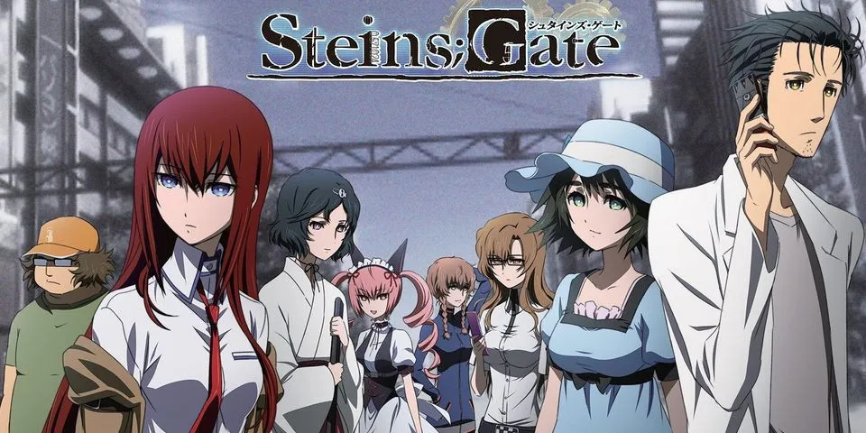

Animes de viagem no tempo
Recentemente assisti um anime bem merdinha de viagem no tempo chamado Tokyo Revengers, podem me xingar, fds. Então separei 2 animes aqui muito bons de viagem no tempo. Segue abaixo.
Erased
Sinopse
Satoru Fujinuma é um jovem-adulto que trabalha fazendo entregas para uma pizzaria e sonha em ser um mangaká, coisa que não vem dando muito certo, porém, ele se esforça muito para concretizar esse desejo. Até esse ponto a vida dele é normal, porém, Satoru tem uma habilidade a qual chama de “revivência” que permite com que volte entre cinco a dez minutos no passado toda vez que algum acidente ou tragédia vai acontecer, permitindo assim que mude os acontecimentos e salve muitas vidas.
Sobre o Anime
Erased é um anime maravilhoso, mesmo tendo temas pesados, como abuso infantil e pedofilia, consegue trazer uma história linda e emocionante. O anime traz uma mensagem bacana sobre ajuda, como nossas assistências e nossa empatia para com o sofrimento dos outros pode salvar vidas. Também, mostra como laços verdadeiros de amizade são fundamentais para que possamos enfrentar nossos medos e obstáculos da vida.
É um anime curtinho com apenas 12 episódios e vale muito a pena assisti-lo. Você pode encontra-lo na Netflix, ou neste site.
Steins;Gate

Sinopse
Steins;Gate é uma obra de ficção científica sobre viagem no tempo. Conta a história de um grupo de amigos que tem um laboratório onde tentam fazer invenções futurísticas, e no meio dessas invenções eles acabam construindo uma máquina do tempo (mas que premissa estranha essa, não é mesmo?).
Sobre o Anime
Steins;Gate simplesmente atende a basicamente todos os requisitos de uma boa história. Embora a ambientação de Steins;Gate pareça um tanto lúgubre, envolta numa paleta meio cinzenta, isso faz parte de toda a atmosfera do anime.
É importante salientar que, se você não conhecia este anime, ele é um tanto quanto complexo e exigirá bastante atenção para que seja possível compreender os eventos que serão passados na trama. Isto porque o anime tem sua trama alicerçada em viagem temporal.
Para pessoas que não estão muito habituadas a acompanharem este tipo de narrativa, pode ser que seja difícil entender ou mesmo achar tudo uma grande chatice. Entretanto, mesmo que seja sua primeira experiência com uma história assim, dê uma chance para Steins;Gate.